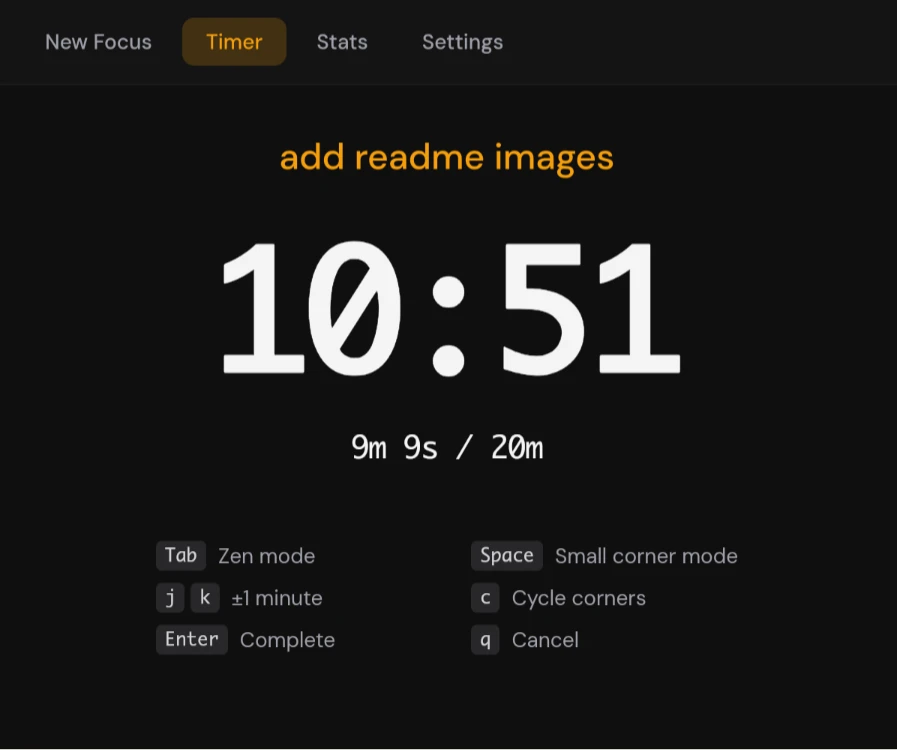

Get better at guessing how long things take.
Pucoti is a countdown timer that asks for a prediction before you start. When you finish, it shows how far off you were. After a few dozen tasks it can tell you how much to add to your estimates, and you'll find you need to add less.
Free and open source. No account, and your data stays on your machine.

This one runs. Type a task and a guess, press Enter. Fast-forward if you'd rather not wait.
Predict, work, compare
01
Say how long
Type what you're about to do and your guess in one line:
write the intro 25m. Pucoti treats it as
an 80% guess, the time you'd bet you'll be done by.
02
Do the thing
The countdown and your task stay on screen. There's no pause button, because the clock doesn't stop for you either. At zero a bell rings and the timer keeps going, in red.
03
See how far off you were
Press Enter when you're done. Pucoti puts your prediction next to what happened, and every task you finish goes into your calibration.
Your estimates, measured
Most people underestimate, and most people don't know by how much. The stats page answers it with one number: what to add to your estimates to be on time 80% of the time.
Below that, it breaks your accuracy down by task length and by week, so you can see whether you're improving and where you're furthest off.


On the desktop, it sits in the corner
Once a timer starts, the desktop app can shrink to a small window that floats over everything else. Your task stays in view while you work, which turns out to be most of what keeps you on it.
It also follows you across workspaces on Sway and niri, can show the timer in the GNOME top bar, and runs your own commands when a timer ends.
Browser or desktop?
The web version is the same timer and the same stats, with nothing to install. Start there. Get the desktop app when you want the timer in a corner of your screen instead of in a tab.
| Browser | Desktop | |
|---|---|---|
| Timer, predictions, stats | Yes | Yes |
| Bell and notifications | While the tab is open | Yes |
| Small window in the corner | No | Yes |
| Works offline | After the first visit | Yes |
| Your own commands | No | Yes |
| Where sessions are kept | In this browser, exportable as CSV | A CSV file on disk |
Browser data lives in that one browser. Clearing site data deletes it, so export your sessions now and then.
Download
Latest release, built from the source on GitHub. Older versions are on the releases page.
Windows
The installer isn't signed, so Windows may warn you before running it. Choose "More info", then "Run anyway".
macOS
The app isn't signed, so macOS won't open it from a plain download. Install it from a terminal instead. For Apple Silicon:
curl -L https://github.com/ddorn/pucoti-tauri/releases/latest/download/Pucoti_aarch64.app.tar.gz \
| tar -xz -C /Applications
xattr -cr /Applications/Pucoti.app
open /Applications/Pucoti.app
On an Intel Mac, replace aarch64 with x64.